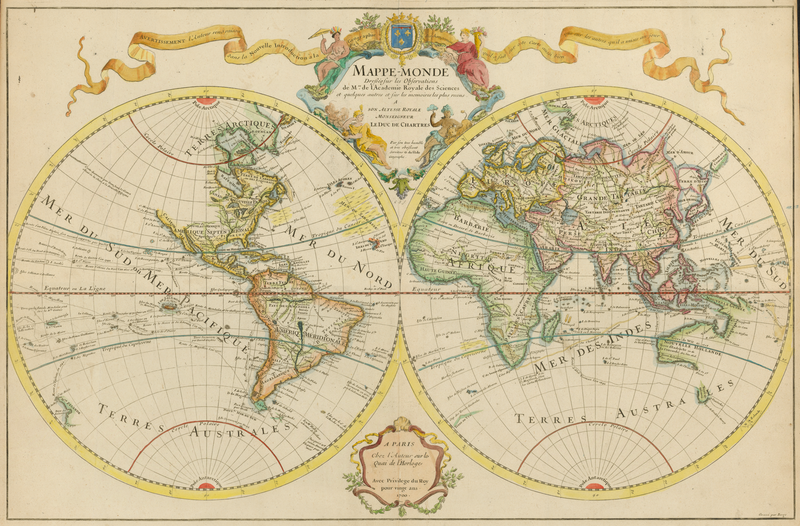
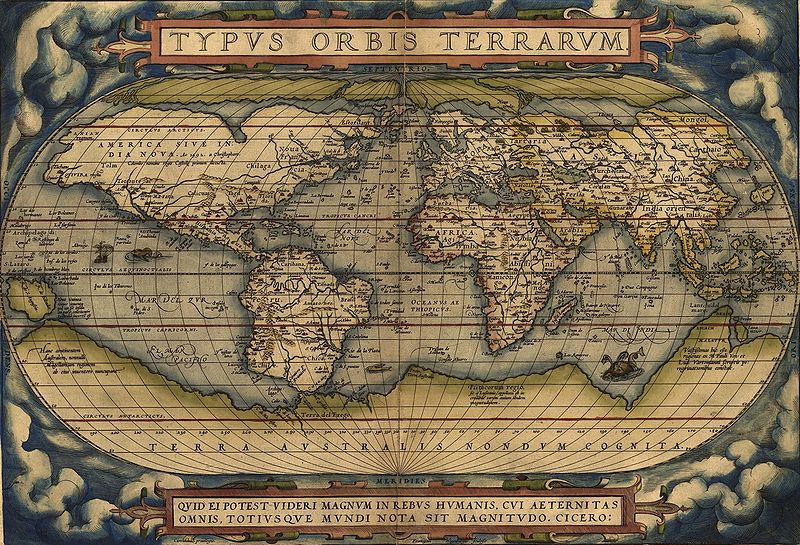
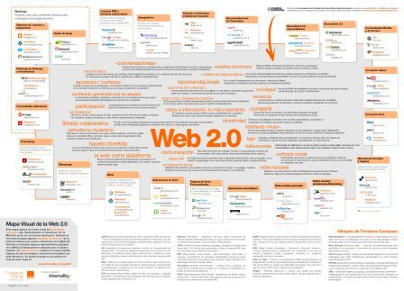
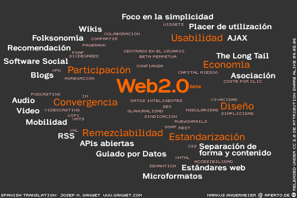

A Chip le han enseñado en el instituto los dos mapas siguientes. Aunque son antiguos, él y todos sus compañeros no han tenido ningún problema para entender su significado.
|
 |
 |
|
Img 2. Mapa mundi de Deslile- 1707 Imagen de Wikipedia con licencia de dominio público |
Img 3. Mapa mundi de Ortelius - 1570 Imagen de Wikipedia con licencia de dominio público |
Después, les han presentado estos otros dos mapas. "Esos no son mapas, no aparecen países, ni continentes, ni océanos", ha dicho una compañera suya. Pero Chip ya ha descifrado muchos jeroglíficos y los entiende rápidamente. "Si que lo son, pero son mapas temáticos donde se explican los servicios y las características de la Web 2.0".
|  |
 |
|
Img 4. Mapa de la Web 2.0 Imagen publicada por Internality con licencia Creative Commons |
Img 5. Mapa meme de la Web 2.0 Imagen de Wikipedia con licencia Creative Commons |
- El mapa visual de la Web 2.0 que acabas de ver, ha sido durante estos últimos años el que más se ha utilizado para explicar este concepto y sus utilidades. Fue publicado por la Fundación Orange bajo licencia Creative Commons y contiene una breve explicación de los servicios de la Web 2.0.
- El mapa meme de la Web 2.0 nos da una información más explicativa sobre las características de la Web 2.0. Fue elaborado por Markus Angermeier y publicado bajo licencia Creative Commons.